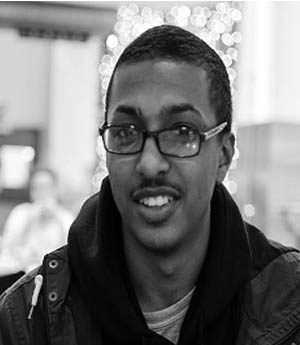
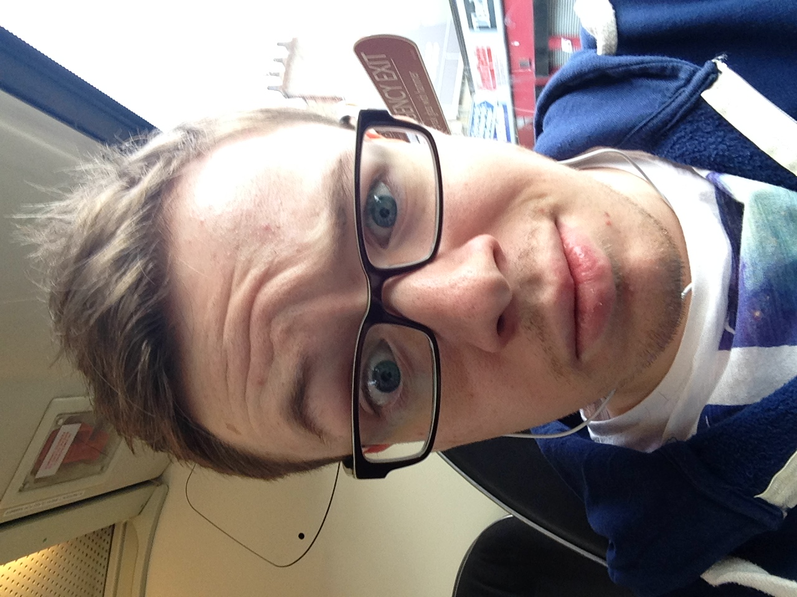
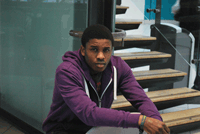
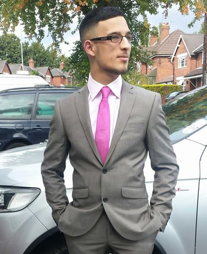

Team 13
Introduction
We are Team 13, this is a group organised with second year student at Manchester Metropolitan University. We have been challenged to compose a video contain a study of a particular subject. However before we get into that we have to introduce the team members.
The team
Kamaal Khanum-Williams (Director)
Hello my name is Kamaal Khanum-Williams, I'm a 20 year old student living in Manchester, currently studying Web Development. I'm in my second year of study, in this course I aim to graduate with a 2:1 to become a web developer or a project manager. In this project I am the director who is responsible of the group and the development of the website as we progress as a group.
I chose to be the director in my group because of my previous experience in my first year. I was the team leader of my first year team project which I greatly enjoyed.I am a strong minded person who strives to be successful in everything I do, I aim to continue my achievements into my second year. As the I progress through this year, I will be learning and practise more to enhance my current skills by doing online tutorials as well as practising in my own time.
Ben Hilton (Camera Operator)
Hello, my name is Ben Hilton. I am a student currently studying Information and Communications at Manchester Metropolitan University. I am originally from Bolton but are currently living in Manchester. After enjoying the Media Making section of my course in the first year, I am readily looking forward to working on the video project with the team and hope that our efforts result in an amazing end product.
During this project, I wish to learn more about how camera angles, direction and screenplay affects the video making process and that afterwards I will be a more valuable asset to my team. I also look forward to the image section of this years work after taking up photography as a hobby and to better my skills within Photoshop.
Warren Murombe (Researcher)
Hello, my name is Warren I am a second year mmu student, I’ve recently travelled to various parts of Europe teaching English as a second languages to young adult and children. Before I have worked with several highly reputable companies such as Samsung, Logitech, Philips and ninja as a digital and physical field marketing.
Daniel Hayes (Editor)
 Hello, my name is Daniel Hayes and I am studying Digtial Media And Communications at Manchester Metropolitan University. I have been interested in media and many of the productions people have produced I find facinating. Since GCSE level I have produced many moving image and photography productions due to education purposes. I was particulary draw to the role of the editor within this project as I have previous experience from my first year of university and throughout A-Level of using the software "Final Cut Pro". In addition to this a career within the editing industry is something I would like to pursue within the future therefore this will help me gain experience on this.
Hello, my name is Daniel Hayes and I am studying Digtial Media And Communications at Manchester Metropolitan University. I have been interested in media and many of the productions people have produced I find facinating. Since GCSE level I have produced many moving image and photography productions due to education purposes. I was particulary draw to the role of the editor within this project as I have previous experience from my first year of university and throughout A-Level of using the software "Final Cut Pro". In addition to this a career within the editing industry is something I would like to pursue within the future therefore this will help me gain experience on this.
Umair Yaquoob (Audio Operator)
A second year undergraduate student, studying Bsc Web Development at Manchester Metropolitan University. I am currently aspiring to gain a work placement within the area of study I have gained knowledge in. My interests lie in it but also co-operating sectors such as Business or Finance even.
The reason why I have chosen this degree is not only due to personal interest and due to goals, it is to become familiar with technological updates as the world we live in today revolves around media and technology. Industries are looking for fresh talent with new and various ideas to bring to their companies. Becoming successful in the work I do is necessary, therefore I am working hard with full motivation to aim high in all of my units so that I get excellent results. Overall, I am aiming to get a 1:1.
In regards to future developments, through job progression I would want a long-term career in Web Development. I would like to gain the best experience in a reputable and prestige company within the UK to build on a portfolio. However, through enhancing job prospects, I aspire to own a firm with my brother abroad such as Dubai, to web design for independent and well-known companies.